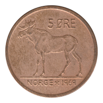
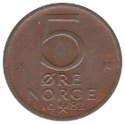

Five Øre
Oscar II / Haakon VII (1875-1907)
Haakon VII (1908-1952)
1913
1928
1941
1951
Third Series
 1942
1942
Haakon VII (1952-1957)
1952
Olav V (1958-1973)
1958
1959
1960
1961
1962
1963
1964
1965
1966
1967
1968
 1969
1970
1971
1972
1973
Olav V (1973-1982)
1973 AB
 1974 AB
1974 AB
1975 AB
1976 AB
1977 AB
1978 AB
1979 AB
 1982 K
Back to Norway
Back to Home